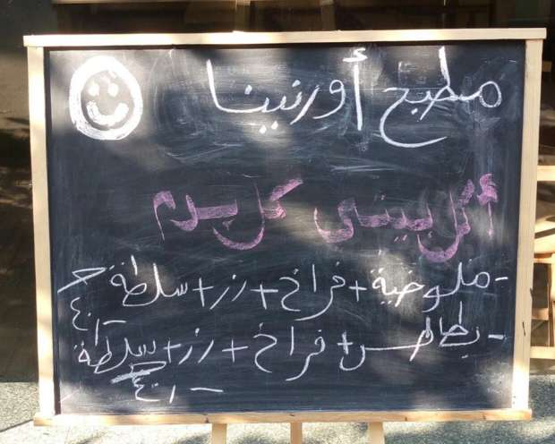
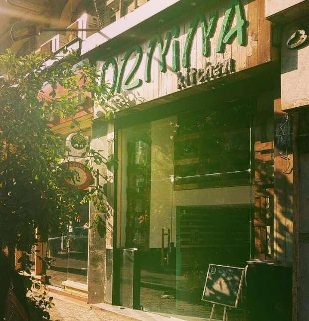

أحدث الأخبار
- باولو يقود هجوم الزمالك أمام رينجرز في دوري الأبطال
- المالية تعفي المطاعم غير السياحية من ضريبة القيمة المضافة بشروط
- "القضاء الإداري" يلزم الجامعة الأمريكية بتحصيل مصروفاتها بالجنيه المصري
- البورصة ترتفع بنسبة 0.52% في نهاية التعاملات
- إعادة فتح موانىء السويس بعد تحسن الأحوال الجوية
- محام: حفظ التحقيقات مع منى مينا في اتهامها بنشر أخبار كاذبة
- نجوى سالم .. كوميديانة انتهت حياتها بمأساة
- الأرصاد: طقس مائل للدفء الاثنين.. والعظمى في القاهرة 22
(أورنينا) حكاية صمود مصرية سورية في محمد محمود
بدأت الحياة تعود إلى سابق عهدها في الشارع الذي شهد قبل نحو ست سنوات أحداث عنف دامية. ووضع مراد سبورة خشبية كتب عليها بالطبشور أطباقَ اليوم في مطبخه (أورنينا) في شارع محمد محمود، وسط القاهرة.
مراد شريف سوري الجنسية أتى إلى مصر مطلع 2012، وتزوج من مصرية، وأصبح لديهما طفل رضيع ومشروع وليد يأملان نجاحه.
وعلى صوت فيروز الملائكي يفتحان (أورنينا) كل صباح، وتقف وفاء تطبخ ما يتوفر لديها من مكونات، ويتولى مراد عمل وتقديم المشروبات للزبائن.

السبورة أمام مطبخ (أورنينا)، كتب عليها مراد أطباق اليوم في مطبخه- صورة من صفحة المطبخ على فيس بوك
قبل ست سنوات من الآن كان مراد شريف ابن مدينة حلب يعمل على خطط التسويق لشركة زانوبيا للسيراميك في العاصمة السورية دمشق، حتى اندلعت شرارة "الثورة السورية" مطلع 2011 وتغير كل شيء.
اُعتقل الشاب الحلبي بعد مشاركة في المظاهرات الأولى، وكُسرت بعض أسنانه الأمامية، ولا تزال غُرز خياطة جروح في وجهه تاركة أثرها عند حاجبه وذقنه.
بنهاية 2011، اُفرج عن مراد وعاد إلى عمله لكن الشركة قررت سحب صلاحيات عدة منه. نصحته الأسرة بالسفر إلى خالته في القاهرة بنية زيارة مدتها 10 أيام "تغيير جو" لكن مراد منذ ذلك التاريخ لم يستطع دخول سوريا ثانية.
وفي القاهرة التي وصل إليها ما لا يقل عن 126 ألف لاجئ سوري تعرف مراد على وفاء وكانت الدواء لجروح الماضي القريب والبيت البديل للوطن البعيد.
وفاء نورالدين نفسها لديها قصة صمود وكفاح خاصة بها. سبق أن عملت مساعدة طباخ في فندق شهير بحي الزمالك. عملٌ نالته بعد إصرار، إذ كان دخول مطبخ الفندق مقصورا على خريجي مدارس السياحة والفنادق وهي حاصلة على دبلوم التجارة.
بدأت وفاء عملها في الفندق بتنظيف الغرف بعد انفصالها عن زوجها الأول، وكانت بحاجة للمال لتربية ابنتها التي لم تكن أكملت عامها الأول بعد.
وفي الفندق كانت للعاملين نقاط تقييم ودائما كانت وفاء تحصل نقاطا عالية. تشجعتْ وأخبرتْ مديرها المباشر عن شغفها بالطبخ، ووصل خبر إلى مدير الفندق، فاستدعاها.
كان المدير أمريكيا يتحدث عربية مكسرة، سألها: لماذا تريدِين دخول المطبخ؟.
فأجابت بحماس: لأني أحب الأكل.
أعطى الأمريكي وفاء فرصة مرهونة بأدائها ونقاط التقييم، وفي المطبخ بدأت الحياة تبتسم لابنة الموظف البسيط الذي توفي وهي في الرابعة عشرة تاركا خلفه زوجة و6 أبناء، كانت وفاء هي الثانية بينهم.
وزادت الحياة ابتسامتها اتساعا حين تعرفت وفاء في أحد مطاعم القاهرة عام 2013 على السوري مراد، وجمعتهما ظروف تتشابه في خطوطها العريضة وبذرة تفاهم مشترك.
وفاء ومراد في مطبخهما (أورنينا) وسط القاهرة، تصوير: مروة صابر- أصوات مصرية
أسس السوري والمصرية بيتا وافتتحا مقهى بالقرب من ميدان التحرير، لكن "حربا من مشاكل وضغوطات" يقول مراد إن منافسين كانوا سببا فيها دفعتهم لبيع المقهى بسعر بَخْس.
وعبست الحياة في وجه الشريكين بعد ابتسامة لم تدم طويلا،"كان بيعدي علينا أيام مش لاقيين العيش" تقول وفاء عن تلك الفترة في حياة أسرتها.
فكر مراد في السفر إلى أوروبا وطلبِ اللجوء كما يفعل سوريون كُثر، إتقانه الفرنسية يعزز مطلبه لكن قوانين العمل في بلدان مثل فرنسا وبلجيكا أوقفته.
قرأ مراد عن تلك القوانين ورأي فيها من القيود ما رجح كفة بقائه في مصر والبدء من جديد وإن كان من نقطة الصفر.
وفي تلك الأثناء كانت وفاء تطبخ وتبيع الوجبات داخل دائرة المعارف. و"لنَفسها الحلو في الأكل" بزغت فكرة (أورنينا) في رأس مراد.
أخذ المطعم اسمه من التمثال الأثري لأورنينا مغنية معبد عشتار في عصور ما قبل الميلاد (محفوظٌ في متحف دمشق الوطني).
استأجر السوري محلا وقضى أيامه الأولى يفكر كيف ومن أين يبدأ، يقول "استلفتُ 5 آلاف جنيه، جبت خشب باليتات (الباليت هي لوح خشبي لنقل البضائع)".
ومن الإنترنت تعلم مراد كيف يطوع الخشب، ونفذ بنفسه ديكور مطعمه، ووحده قام بأعمال السباكة والنقاشة، حتى اللافتة على واجهة مطعمه صنعها من ورق الفوم، يقول ضاحكا "كلفتني 30 جنيها".
بعد شهر من التجهيزات افتتح مراد ووفاء أورنينا، وفضلوا استخدام كلمة مطبخ بدلا من مطعم زيادة في تأكيد المسحة المنزلية، وفي إشارة إلى انهما يعملان بنفسيهما في طهي الأكل. وبعد ثلاثة أيام من الافتتاح استقبلا مولودهما الأول آرام.
تعافت وفاء من آلام الولادة وعادت تطبخ في مطعمها الوليد وزوجها يُضيَّف الزائرين.
وعند كل صباح تترك وفاء رضيعها برفقة جدة مراد التي تعيش معهما، وتستقبل وزوجها ضيوف مطبخ أورنينا منذ الحادية عشرة صباحا وحتى الواحدة بعد منتصف الليل.
ومن حين لآخر تطمئن الأم هاتفيا على أبنائها: آرام وجودي.
"جودي، بنتي اللي ما ولدتا" يتحدث مراد بلهجته السورية عن ابنة وفاء من زوجها السابق.
تعيش جودي مع جدتها (والدة وفاء)، ويسعى مراد لإقناع والدها بالسماح للطفلة بالإقامة في "بيت أمها مع أخيها الرضيع"، وكله ثقة في أنها مسألة وقت ويلتئم شمل العائلة في وطن صغير بجدران أربعة يعلق عليها ما تبقى من ذكريات وآمال عن الوطن الكبير.. سوريا.

واجهة مطبخ (أورنينا) في شارع محمد محمود- صورة من صفحة المطبخ على فيس بوك


{kind=link}
تعليقات الفيسبوك